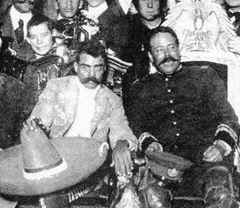

La Revolución Mexicana es uno de los acontecimientos más importantes de la historia de México y principalmente del siglo XX. Con ésta, dio fin la larga dictadura porfirista y se pasó a una etapa difícil por la participación de distintas tendencias revolucionarias y sus respectivos caudillos, que al tener propósitos y objetivos diferentes unos de otros, lucharon entre sí para favorecer sus intereses. La Revolución iniciada por Madero con el Plan de San Luis, fue provocada por causas de orden político, económico y social.
El propósito inicial era el derrocamiento de Porfirio Díaz de la presidencia de La Republica. La revolución maderista fue acogida con beneplácito por grandes sectores de la sociedad mexicana, principalmente por los campesinos, que esperanzados por lo prometido por Madero, se lanzaron a la lucha armada; Villa, Orozco y Zapata, encabezaron esta lucha campesina, pero pronto se dieron cuenta de que el reparto o la restitución de las tierras era lo que menos importaba a los dirigentes del movimiento.

El caso de Francisco Villa y Pascual Orozco es un caso particular. El primero adoptado por Chihuahua (aunque nació en Durango) y el otro nacido originario del estado. Ambos tuvieron inicios diferentes en la revolución: Pancho Villa se adhirió gracias a la colaboración de Abraham González quien lo ganó para la causa; Pascual Orozco también tuvo contacto con don Abraham, pero sus primeros pasos los dio como presidente del club antirreeleccionista Benito Juárez en Guerrero Chih.
De hecho sus inicios son opuestos. Mientras Doroteo Arango tuvo problemas con la ley desde joven, Pascual fue un comerciante y transportaba metales de grandes empresas. Orozco empezó a destacar de manera más rápida en la lucha, con victorias rápidas a partir de 1911; Villa empieza a mostrar sus dotes de líder y de gran guerrero, pero en las batallas de esta etapa estuvo bajo las órdenes de Pascual Orozco.